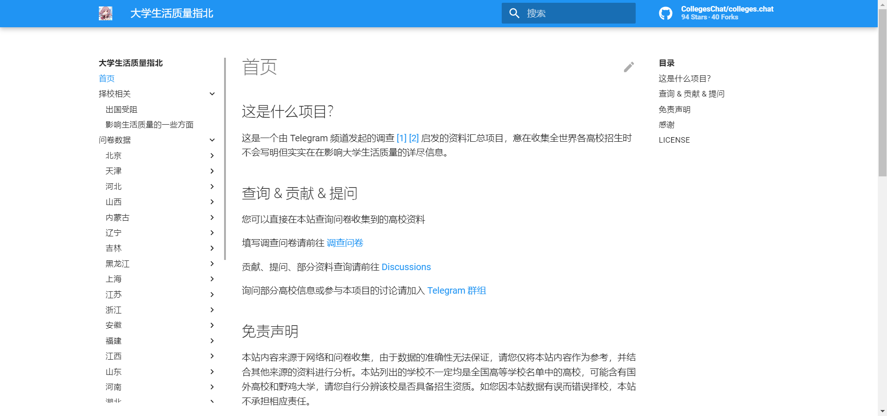
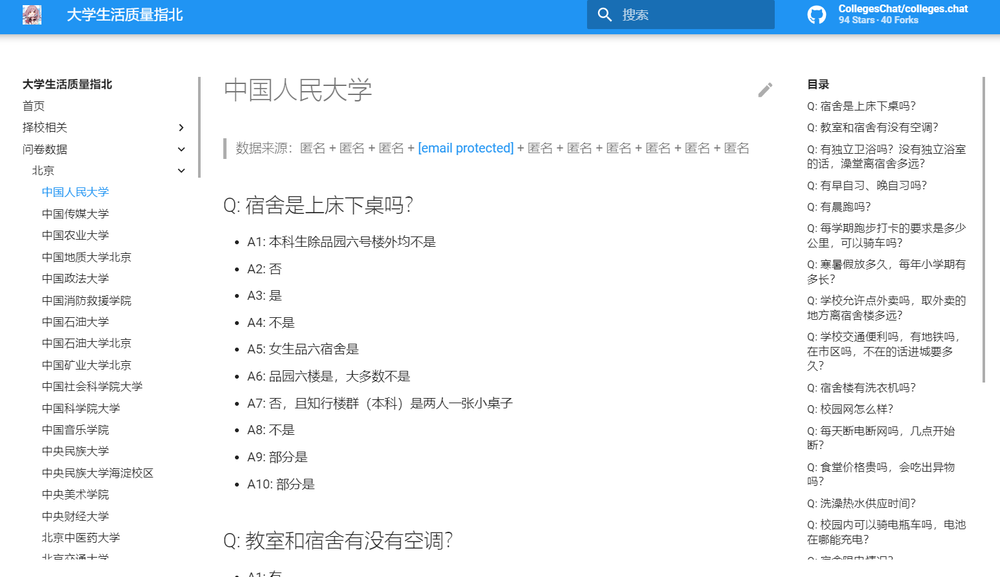

这是一个帮助你在择校阶段提升大学生活质量的网站
大家在高考后择校时可能更加看重学校综合实力，却忽视了最影响大学生活质量的一些问题，而这个网站的出现恰好补充了这一点。
前言
大家在高考后择校时可能更加看重学校学科实力，却忽视了最影响大学生活质量的一些问题——正是因为往往这些问题不被人们关注，使得可供参考的资料过少，进而导致许多人入学后对现实与期望的偏差产生“劝退”情绪。而这个网站——大学生活质量指北的出现恰好补充了这一点。
正文
去年高考后翻过这个网站，里面包含了有关国内诸多大学的大家比较关心的学校生活和学习环境的相关问题，当时对我的帮助很大。
今年又翻出这个网站，发现又补充了不少大学，应该能给大部分人择校提供参考。


最后修改于 2022-06-11